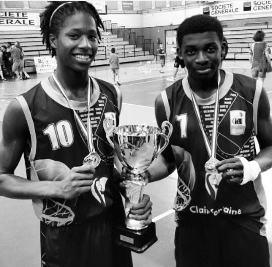

LE PARCOURS
Une énergie débordante trouve son canal. Le mouvement devient une nécessité. Le basketball prend toute la place.
Intégration du CREPS de Châtenay-Malabry. L'antichambre du haut niveau. Un environnement d'exigence totale où chaque entraînement compte. La discipline devient une seconde nature.
Les meilleurs centres de formation du basketball français. Entraînements quotidiens, études, compétition nationale. Le niveau monte encore. Le joueur se construit.

Une rupture. Pas seulement physique. Le genou lâche. Opération. Fauteuil roulant. Centre de rééducation. Huit mois pendant lesquels tout ce qui semblait acquis doit être réappris. Marcher. Courir. Être. C'est là que la philosophie "NZ 100%" commence à prendre forme : dans la douleur, dans le silence, dans le travail quand personne ne regarde.
Contre toute attente. Deux ans après avoir tout perdu, Mathieu signe un contrat stagiaire professionnel et remporte le titre de Champion de France avec Le Mans. Ce retour n'est pas un miracle. C'est le résultat de chaque matin difficile, chaque répétition invisible, chaque moment où il aurait pu abandonner et ne l'a pas fait.

Capitaine de l'équipe espoir à Boulazac. Une nouvelle responsabilité. Puis une nouvelle épreuve : blessure à la hanche. Reconstruction à Capbreton. Cette fois, le parcours prend un sens différent. Ce n'est plus seulement jouer. C'est comprendre. Transmettre. Accompagner.
Il ne joue plus pour lui. Il fait gagner les autres. Chaque client qui reprend le sport, chaque basketteur qui progresse, chaque adulte qui retrouve sa forme — c'est une victoire qui a le goût de tout ce qu'il a traversé.